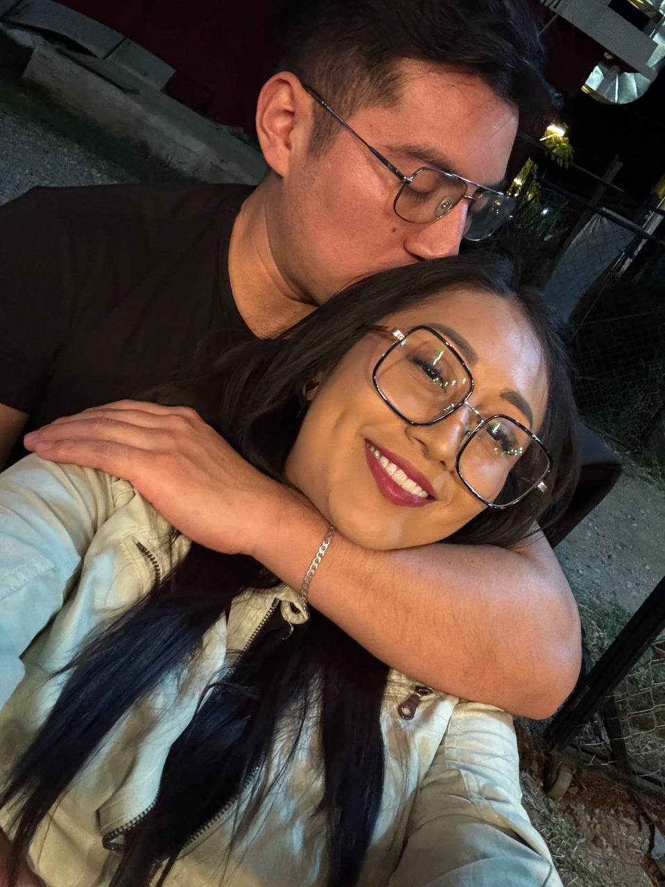
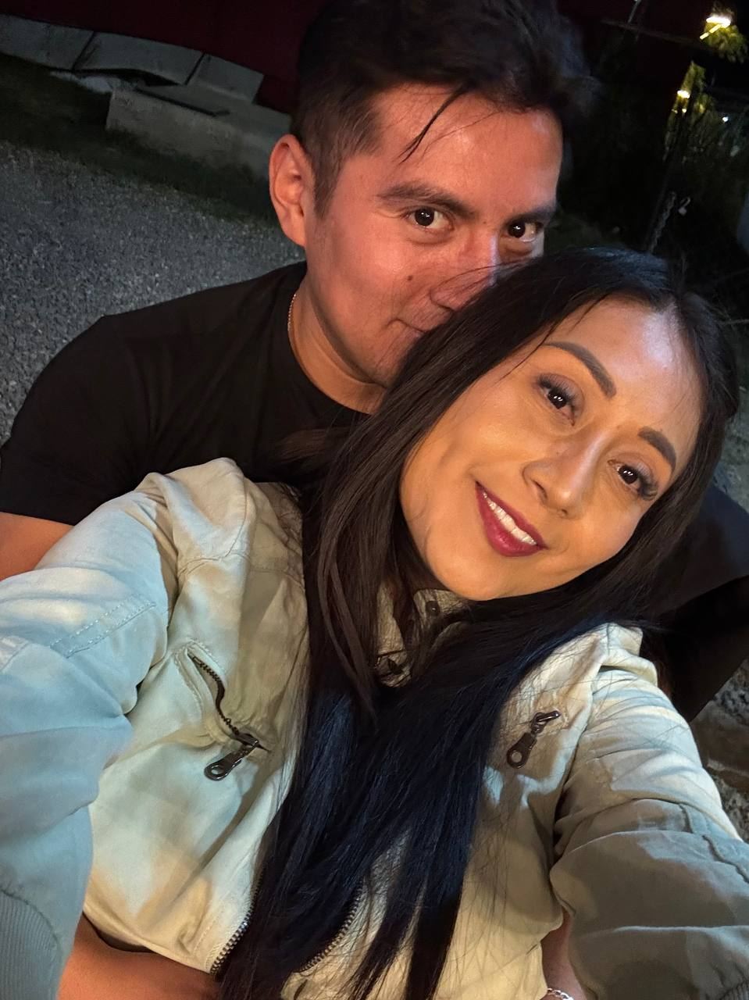

commit 0012
Date: Feb 2026
🟡 One More Photo
🟢 Git Message
feat: another ordinary night successfully archived
⚪ Story
Aquella noche simplemente queríamos salir a cenar.
Mientras íbamos en el camino, te propuse entrar a un lugar que siempre me llamaba la atención por todas las luces que veía desde la calle.
Nunca había entrado.
Así que decidimos probar qué tal estaba.
Pedimos de comer.
Recuerdo que el mole estaba muy rico.
Mientras preparaban la comida se me antojó una cerveza.
Fuimos por ella a un lugar cercano y regresamos mientras terminaban de preparar nuestra cena.
Como casi siempre, en algún momento dije:
> "Foto."
Sin pensarlo demasiado, te acercaste y posaste dándome un beso.
Fue una de esas fotografías que nacieron de la manera más natural.
Después cenamos.
Platicamos un rato.
Y, como tantas otras veces, terminamos el día en tu casa.
En ese momento solo era una fotografía más.
🟣 Developer Notes
New restaurant discovered.
Another spontaneous photo archived.
Ordinary moments continued becoming unforgettable.
🟢 Impact on Project
+ New favorite dinner discovered.
+ Another memory documented.
+ One more photo archived.
🟢 Commit Status
✔ Completed
✔ Reviewed
✔ Ready for Release
🖼 Recuerdos

Foto.

Fue una de esas fotografías que nacieron de la manera más natural.